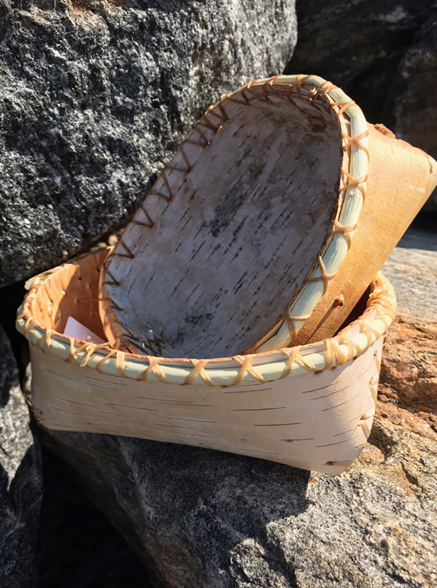
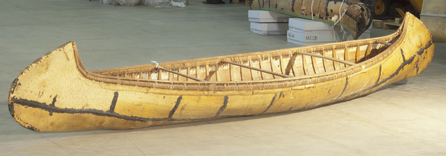

Birch Bark or "Wiigwa" in Ojibwe is from the Birch Tree and is used widley in their traditional life style. The bark was used for baskets to collect wildrice, berries and fish as well as maple syrup. The also used the bark due to its light weight to build canoes to get around and trade in the Great Lakes Region.
 